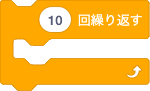

ロボットに何度も同じ動作を繰り返させたいときがあります。
繰り返すブロックを使うとそのような処理をコンパクトにプログラミングできます。
流れ星に願い事をさせよう（回数指定）
ｎ回繰り返すブロックを使ってみましょう。
このブロックは黄色の「制御」の中にあります。
次の動画を見てみよう。

早口言葉を4回繰り返すプログラムを作ってみよう。
閉店予告アナウンスを繰り返そう（条件指定）
先の例題では指定回数だけ繰り返すプログラムを作りました。
今度は、条件を満たすまで繰り返すプログラムを作ってみましょう。
閉店予告のアナウンスをエンドレスで繰り返すプログラムを考えます。
ここで使うブロックも黄色の「制御」の中にあります。
ある条件を満たすまで処理を繰り返すプログラムを作りたいときに使います。
条件判断には、緑の「演算」にある、左右が尖った形のブロックを利用します。
今回は、左に入力した値が、右に入力した値と同じかどうかを調べる次のブロックを使います。
入力できる値は数字、文字、変数、他のブロックです。
それでは次のプログラムを作ってみよう。
アナウンス原稿
本日のご来店、誠にありがとうございます。
お客様にご案内申しあげます。
当店はまもなく閉店の時刻でございます。
お忘れ物ございませんよう、お気をつけてお帰りくださいませ。
ありがとうございました。

実行中のプログラムを止めたい場合は、緑の旗の横にある赤い八角形をクリックします。
閉店予告アナウンスを1分経ったら止めるようにするには、強制終了させるブロックを別に用意します。
閉店予告アナウンスをPepperの頭を触ったら止めるようにしよう。